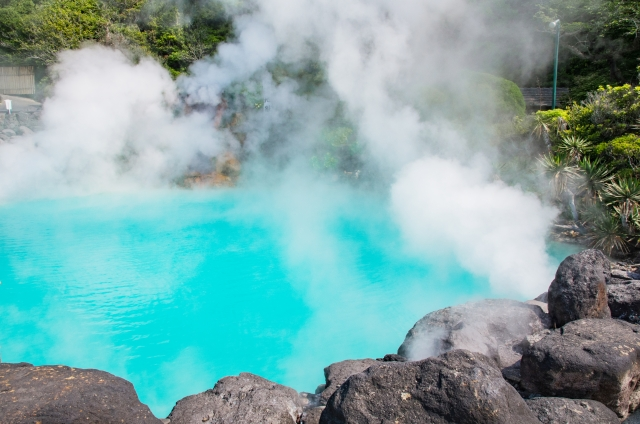

トップ
県から探す
福岡県
佐賀県
長崎県
熊本県
大分県
宮崎県
鹿児島県
沖縄県
島を旅する
壱岐
対馬
屋久島
奄美大島
目的から探す
温泉
グルメ
絶景
歴史・文化
体験
レジャー
世界遺産
ショッピングモール
道の駅
週間ランキング
おすすめのモデルコース
特集
観光マップ
九州
ホーム
県から探す
県から探す
福岡県
佐賀県
長崎県
熊本県
大分県
宮崎県
鹿児島県
沖縄県
おすすめスポット
ここにテキストが入ります。ここにテキストが入ります。ここにテキストが入ります。
福岡県
ここにテキストが入ります。ここにテキストが入ります。ここにテキストが入ります。
熊本県

ここにテキストが入ります。ここにテキストが入ります。ここにテキストが入ります。
大分県
ここにテキストが入ります。ここにテキストが入ります。ここにテキストが入ります。
長崎県